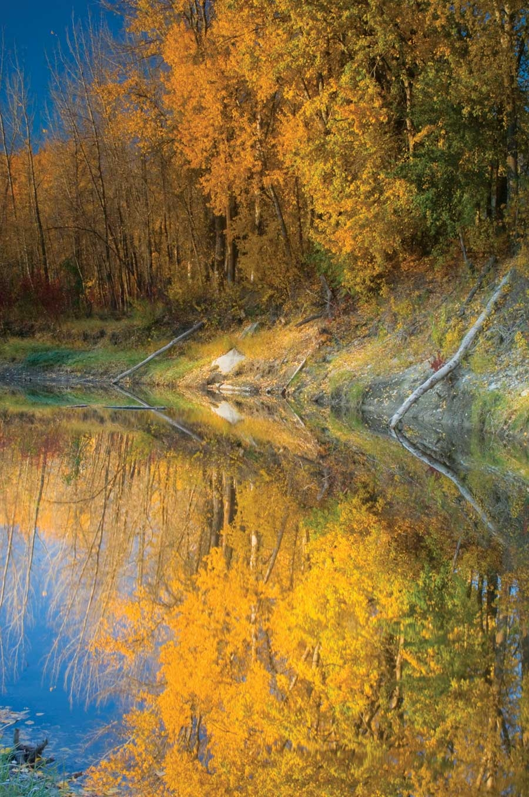
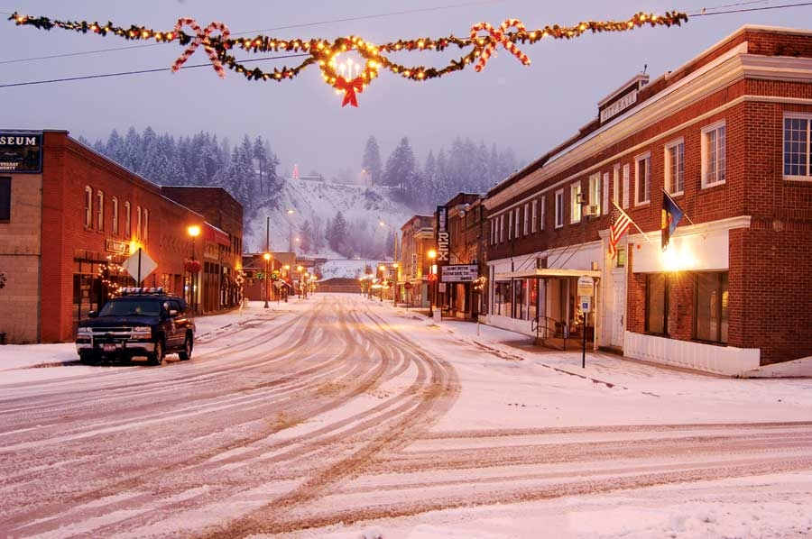

For every great place, there are stories that crystallize its hidden qualities and bring them to the fore. (After you read about Bonners Ferry, check out the 10 other towns in the 2009 list of Great Places You’ve (Maybe) Never Heard Of.) In Bonners Ferry, Idaho, a logging town on the northern stretch of the Kootenai River, one such moment came in 2006, when Atlanta transplant Carolyn Testa opened Groove Studio, an art gallery housed in an old bank building downtown. Groove Studio is run as a co-op - local and regional artists rent wall space and keep 100 percent of their sales. What’s surprising is that more than two dozen artists, in a county of less than 10,000 people, stepped forward to display their works.
Why such a high density of artists? “We’re known as the crown jewel of the Northwest, and we have incredible access to mountain ranges,” Testa says. “Beauty attracts an artistic mind-set.”
It helps to some degree that the region includes Sandpoint, a tourist town 30 miles to the south where there’s a thriving gallery scene, an international film festival and the popular Schweitzer Mountain ski resort. But while Sandpoint has developed its tourist trade, Bonners Ferry remained a logging town until fairly recently.
The town’s 15 minutes of fame came in 1975 when the local Kootenai tribe declared war on the United States. The bloodless war lasted just three days, and won the tribe official recognition by the U.S. Bureau of Indian Affairs and a land concession that formed the heart of a new reservation. Today, the tribe is a regional leader in environmental efforts, including the Kootenai Valley Resource Initiative, a watershed preservation alliance that has been instrumental in restoring the health of the river and its tributaries.
Bonners Ferry is the county seat of Boundary County, which, as the name implies, lies at the far northern tip of the state, bordered by Washington, Montana and Alberta, Canada. Similar to a lot of northwestern towns, this one was first formed as a supply center for prospectors and quickly evolved into a timber center.
Traces of the mighty old-growth forests can be experienced on hiking trails in the spectacular, mountainous Panhandle National Forest lands, part of which lie in Boundary County. As logging has slowly declined, bikers have discovered that the abandoned logging roads make for a literal mountain biking experience.
Along with transplants such as Testa, locals are looking to tourism as a new industry. Logger Jack Yount, for instance, has traded his chain saw for a coffee roaster and serves his own brew in a downtown coffee shop. Bonners Ferry recently rebuilt its downtown, widening sidewalks and adding decorative touches such as lampposts and flower baskets in an effort to make the area much more pedestrian-friendly.
“The general consensus is that nobody wants to make us into another Sandpoint,” Testa says. “We see the traffic and the tax rates down there. Folks don’t want a Walmart here. We’re very small and quaint, and we like that.”
Population: 2,515
Median Household Income: $37,653
Weather: Northern climate with mild summers and winters with lots of snow.
What Makes It Great: Gorgeous scenery and a growing population of artists. A strong will to preserve the town’s local focus.
|
 TIM CADY Bonners Ferry, Idaho, sits on the northern stretch of the Kootenai River. The local Kootenai Valley Resource Initiative is a leader in watershed preservation and has worked to clean up the river and its tributaries. |
 TIM CADY Check out Bonners Ferry, Idaho, which has evolved from a logging town to a visitor-friendly hikers’ haven. In Bonners Ferry, you’ll find some of the best scenery and recreation in the United States, plus a community-wide determination to preserve the town’s small, quaint atmosphere. |
|